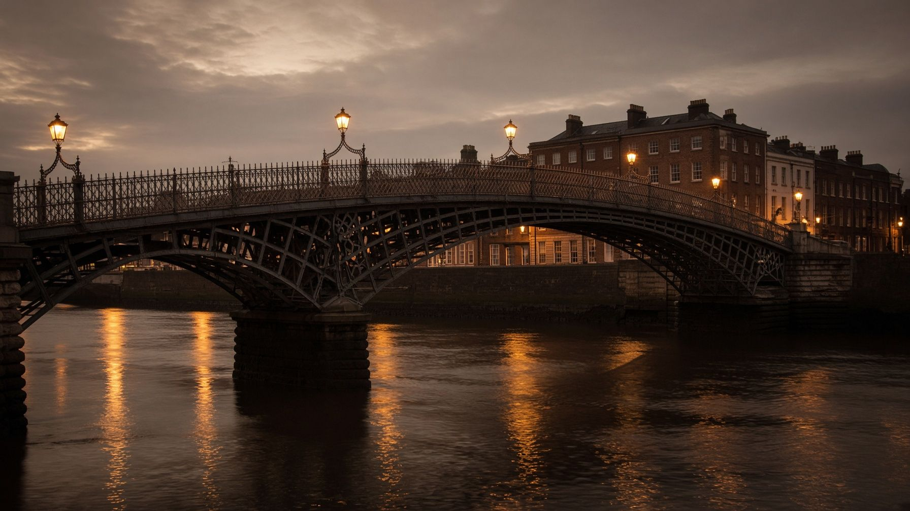
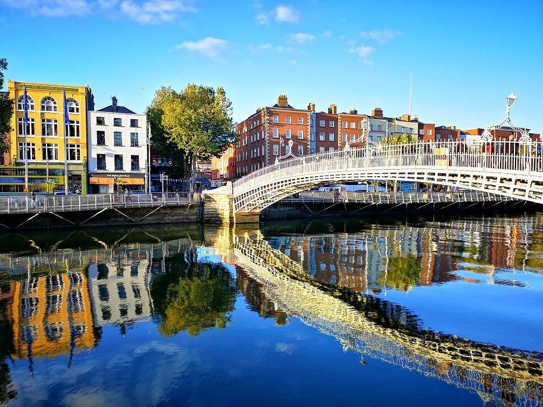
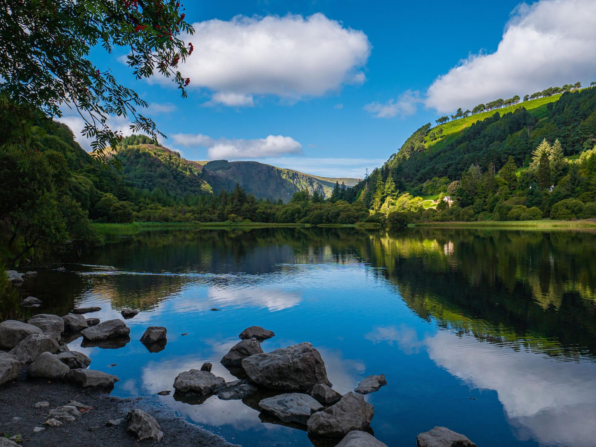
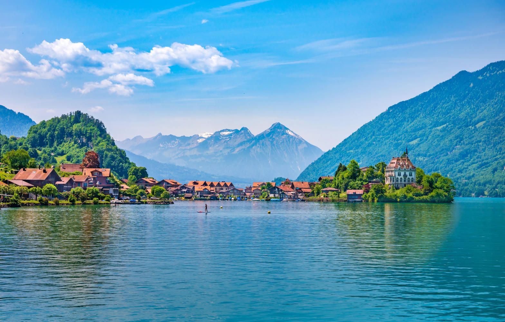
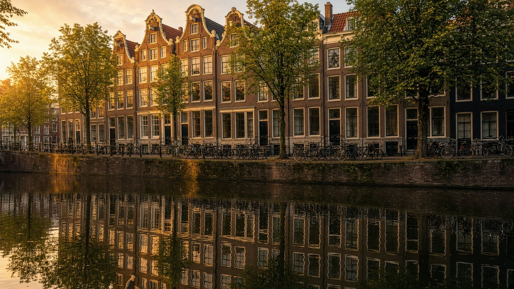
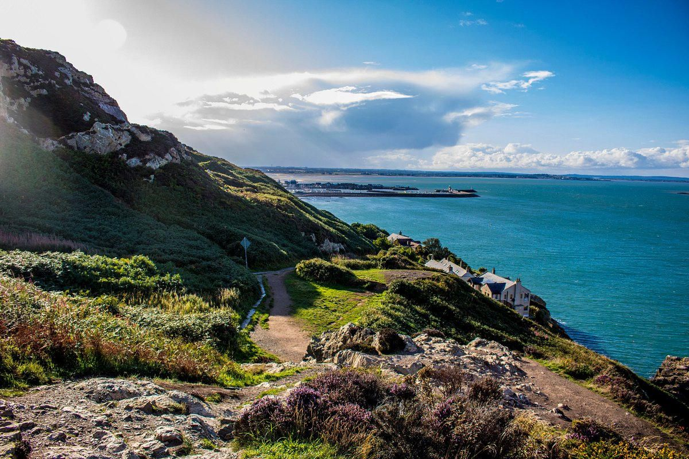
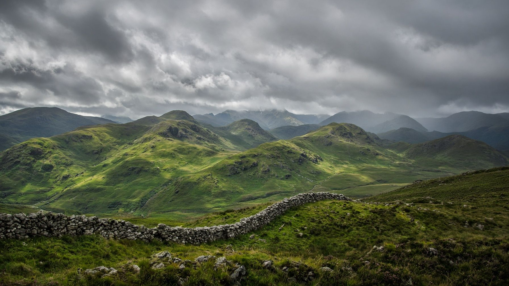

Дублін · Ірландія · Європа
Подорож це завжди пошук любові
Світ стає гармонійним лише коли намагаєшся у нього поринути
Напрямки
Куди вирушаємо

Тури по Дубліну
Виберіть пішохідний тематичний тур або загальну оглядову екскурсію Дубліном.
Дивитися
Тури по Ірландії
Індивідуальні та групові маршрути всією Ірландією.
Дивитися
Закордонні тури з Дубліна
Групові тури з супроводом і вильотом з Дубліна.
Дивитися
Закордонні тури
Групові тури з вильотом з різних міст Європи.
ДивитисяОбране
Авторські маршрути
Дублін · 3 години
Оглядова екскурсія Дубліном
3-годинна прогулянка містом з оглядом основних визначних місць, вулиць та соборів.

день без урахування дорогиІрландія · Хоут
Howth — вікінги, феї та рибалки
Хоут зібрав усе, заради чого їдуть до Ірландії: середньовічний замок, язичницький дольмен, історії про піратів і вікінгів, легенди про фей і магію.
Ірландія · Глендалох
Смарагдовий та магічний Glendalough
Поєднання давньої ірландської історії, містики та неймовірної природи долини двох озер.
04–07 лютого 2027
Швейцарія
Женева — Інтерлакен — Люцерн — Цюріх. Груповий тур із вильотом з Дубліна.
Гід і засновниця
Наталія Кашаріна
Мене звати Наталія Кашаріна, і я засновниця туристичної агенції Natvik Tours. Я працюю в туризмі з 2001 року і маю великий досвід роботи з туристами. Агенцію було засновано 2016 року в Києві.
Ірландія — дуже гарна і дуже люб’язна країна, яка прийняла українців щирою душею. Тут я навчалася в туристичних коледжах протягом двох років і 2024 року отримала сертифікат гіда з Ірландії.
Історія Natvik